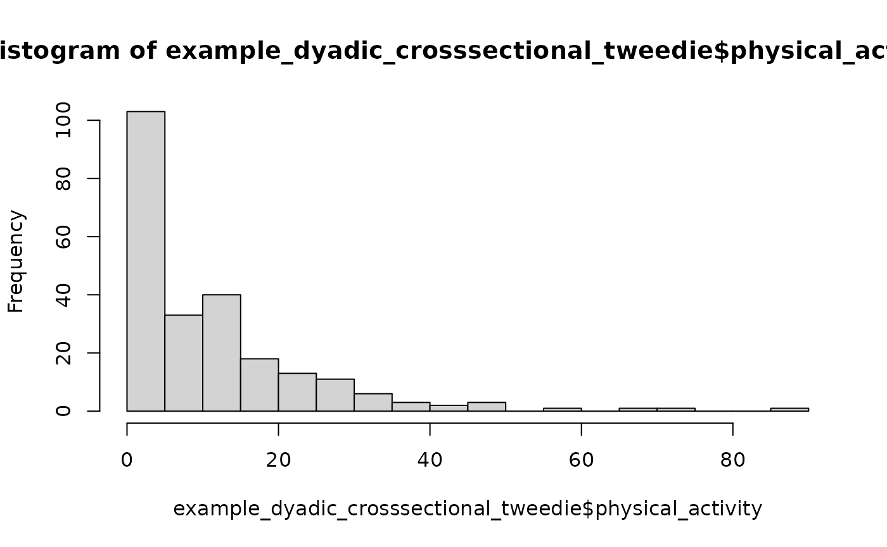

Actor-Partner Interdependence Model (APIM)
apim.RmdThis vignette focuses on the cross-sectional and intensive longitudinal Actor-Partner Interdependence model for distinguishable and exchangeable dyads.
For the main data requirements and validation workflow of the
interdep package, start with the Getting Started vignette. For APIMs that
combine distinguishable and exchangeable dyad compositions, see the Mixed-Composition APIM vignette. For DIM
predictors and their equivalence to APIM effects in exchangeable dyads,
see the Dyad-Individual Model vignette. For
undirected dyadic score outcomes, see the Dyadic
Score Model vignette.
This vignette is under construction and for now only contains a few preliminary example models. Please check back soon!
Test distinguishability
Aside from using a Wald test on the first model, nested model comparisons require models fit to the same prepared data object. Helpers for creating those constrained columns are planned.
Semi-continuous cross-sectional data
example_dyadic_crosssectional_tweedie has the same
dyadic structure as before, but the outcome has exact zeros and positive
skewed values, as in some physical activity outcomes, in contrast to the
Gaussian distribution from the previous example.
print(head(example_dyadic_crosssectional_tweedie))
#> personID coupleID gender motivation physical_activity
#> 1 1 1 female -1.3379394 4.029024
#> 2 2 1 male -0.9379639 3.432234
#> 3 3 2 female -0.6370109 3.078311
#> 4 4 2 male 0.6999823 13.721497
#> 5 5 3 female -0.6078674 7.812779
#> 6 6 3 male -0.6459191 7.078761
hist(example_dyadic_crosssectional_tweedie$physical_activity, breaks = 20)
Validation and modeling work the same way because the dyadic structure is the same. The random-effect interpretation is different from the Gaussian case: Tweedie random effects are latent effects on the log-mean scale, while the observation-level Tweedie variance remains part of the model.
Distinguishable Tweedie APIM
tweedie_distinguishable_data <- prepare_interdep_data(
example_dyadic_crosssectional_tweedie,
group = coupleID,
member = personID,
role = gender,
predictors = motivation,
# when no model_type is specified, apim is the default.
seed = 123
)
print(tweedie_distinguishable_data)
#> # interdep data
#> # Rows: 240 | Dyads: 120 | Intensive longitudinal: no
#> # Structure: group = coupleID, member = personID, role = gender
#> #
#> # Dyad compositions:
#> # female_x_male distinguishable 120 dyads
#> #
#> # Added columns:
#> # .i_composition inferred dyad composition
#> # .i_composition_role composition-specific member role
#> # .i_is_{comp-role} composition-role indicator columns
#> # .i_{pred}_actor APIM actor predictor: actor's original predictor
#> # values
#> # .i_{pred}_partner APIM partner predictor: partner's original predictor
#> # values
#> #
#> # A tibble: 240 × 11
#> personID coupleID gender motivation physical_activity .i_composition
#> <int> <int> <fct> <dbl> <dbl> <fct>
#> 1 1 1 female -1.34 4.03 female_x_male
#> 2 2 1 male -0.938 3.43 female_x_male
#> 3 3 2 female -0.637 3.08 female_x_male
#> 4 4 2 male 0.700 13.7 female_x_male
#> 5 5 3 female -0.608 7.81 female_x_male
#> 6 6 3 male -0.646 7.08 female_x_male
#> 7 7 4 female -0.0316 1.45 female_x_male
#> 8 8 4 male 0.380 23.3 female_x_male
#> 9 9 5 female 0.575 3.98 female_x_male
#> 10 10 5 male 1.77 20.1 female_x_male
#> # ℹ 230 more rows
#> # ℹ 5 more variables: .i_composition_role <fct>,
#> # .i_is_female_x_male_female <dbl>, .i_is_female_x_male_male <dbl>,
#> # .i_motivation_actor <dbl>, .i_motivation_partner <dbl>
summary(tweedie_distinguishable_data)
#> personID coupleID gender motivation
#> Min. : 1.00 Min. : 1.00 female:120 Min. :-2.320532
#> 1st Qu.: 60.75 1st Qu.: 30.75 male :120 1st Qu.:-0.580126
#> Median :120.50 Median : 60.50 Median :-0.032795
#> Mean :120.50 Mean : 60.50 Mean :-0.008869
#> 3rd Qu.:180.25 3rd Qu.: 90.25 3rd Qu.: 0.537262
#> Max. :240.00 Max. :120.00 Max. : 2.423337
#> NAs :9
#> physical_activity .i_composition .i_composition_role
#> Min. : 0.000 female_x_male:240 female_x_male_female:120
#> 1st Qu.: 1.445 female_x_male_male :120
#> Median : 7.855
#> Mean :11.026
#> 3rd Qu.:15.147
#> Max. :85.043
#> NAs :4
#> .i_is_female_x_male_female .i_is_female_x_male_male .i_motivation_actor
#> Min. :0.0 Min. :0.0 Min. :-2.320532
#> 1st Qu.:0.0 1st Qu.:0.0 1st Qu.:-0.580126
#> Median :0.5 Median :0.5 Median :-0.032795
#> Mean :0.5 Mean :0.5 Mean :-0.008869
#> 3rd Qu.:1.0 3rd Qu.:1.0 3rd Qu.: 0.537262
#> Max. :1.0 Max. :1.0 Max. : 2.423337
#> NAs :9
#> .i_motivation_partner
#> Min. :-2.320532
#> 1st Qu.:-0.580126
#> Median :-0.032795
#> Mean :-0.008869
#> 3rd Qu.: 0.537262
#> Max. : 2.423337
#> NAs :9
tweedie_distinguishable_model <- glmmTMB(
physical_activity ~
# remove standard intercept and model separate intercepts for male and female
0 + .i_is_female_x_male_female + .i_is_female_x_male_male +
# gender-specific slopes for motivation actor effect
.i_is_female_x_male_female:.i_motivation_actor + .i_is_female_x_male_male:.i_motivation_actor +
# gender-specific slopes for motivation partner effect
.i_is_female_x_male_female:.i_motivation_partner + .i_is_female_x_male_male:.i_motivation_partner +
# keep a simple couple-level latent effect for stable non-independence
# important limitation: this can only induce positive partner dependence
(1 | coupleID)
# allow role-specific Tweedie dispersion
, dispformula = ~ 0 + .i_is_female_x_male_female + .i_is_female_x_male_male
, family = tweedie()
, data = tweedie_distinguishable_data
)
summary(tweedie_distinguishable_model)Exchangeable Tweedie APIM
tweedie_exchangeable_data <- prepare_interdep_data(
example_dyadic_crosssectional_tweedie,
group = coupleID,
member = personID,
# role = gender,
predictors = motivation,
seed = 123
)
print(tweedie_exchangeable_data)
#> # interdep data
#> # Rows: 240 | Dyads: 120 | Intensive longitudinal: no
#> # Structure: group = coupleID, member = personID
#> #
#> # Dyad compositions:
#> # assumed_exchangeable exchangeable 120 dyads
#> #
#> # Added columns:
#> # .i_composition inferred dyad composition
#> # .i_composition_role composition-specific member role
#> # .i_is_{comp-role} composition-role indicator columns
#> # .i_diff_{comp} composition-specific sum-diff contrasts with arbitrary
#> # direction; 0 for distinguishable dyads or other
#> # exchangeable compositions
#> # .i_{pred}_actor APIM actor predictor: actor's original predictor
#> # values
#> # .i_{pred}_partner APIM partner predictor: partner's original predictor
#> # values
#> #
#> # A tibble: 240 × 11
#> personID coupleID gender motivation physical_activity .i_composition
#> <int> <int> <fct> <dbl> <dbl> <fct>
#> 1 1 1 female -1.34 4.03 assumed_exchangeable
#> 2 2 1 male -0.938 3.43 assumed_exchangeable
#> 3 3 2 female -0.637 3.08 assumed_exchangeable
#> 4 4 2 male 0.700 13.7 assumed_exchangeable
#> 5 5 3 female -0.608 7.81 assumed_exchangeable
#> 6 6 3 male -0.646 7.08 assumed_exchangeable
#> 7 7 4 female -0.0316 1.45 assumed_exchangeable
#> 8 8 4 male 0.380 23.3 assumed_exchangeable
#> 9 9 5 female 0.575 3.98 assumed_exchangeable
#> 10 10 5 male 1.77 20.1 assumed_exchangeable
#> # ℹ 230 more rows
#> # ℹ 5 more variables: .i_composition_role <fct>,
#> # .i_is_assumed_exchangeable <dbl>,
#> # .i_diff_assumed_exchangeable_arbitrary <dbl>, .i_motivation_actor <dbl>,
#> # .i_motivation_partner <dbl>
summary(tweedie_exchangeable_data)
#> personID coupleID gender motivation
#> Min. : 1.00 Min. : 1.00 female:120 Min. :-2.320532
#> 1st Qu.: 60.75 1st Qu.: 30.75 male :120 1st Qu.:-0.580126
#> Median :120.50 Median : 60.50 Median :-0.032795
#> Mean :120.50 Mean : 60.50 Mean :-0.008869
#> 3rd Qu.:180.25 3rd Qu.: 90.25 3rd Qu.: 0.537262
#> Max. :240.00 Max. :120.00 Max. : 2.423337
#> NAs :9
#> physical_activity .i_composition .i_composition_role
#> Min. : 0.000 assumed_exchangeable:240 assumed_exchangeable:240
#> 1st Qu.: 1.445
#> Median : 7.855
#> Mean :11.026
#> 3rd Qu.:15.147
#> Max. :85.043
#> NAs :4
#> .i_is_assumed_exchangeable .i_diff_assumed_exchangeable_arbitrary
#> Min. :1 Min. :-1
#> 1st Qu.:1 1st Qu.:-1
#> Median :1 Median : 0
#> Mean :1 Mean : 0
#> 3rd Qu.:1 3rd Qu.: 1
#> Max. :1 Max. : 1
#>
#> .i_motivation_actor .i_motivation_partner
#> Min. :-2.320532 Min. :-2.320532
#> 1st Qu.:-0.580126 1st Qu.:-0.580126
#> Median :-0.032795 Median :-0.032795
#> Mean :-0.008869 Mean :-0.008869
#> 3rd Qu.: 0.537262 3rd Qu.: 0.537262
#> Max. : 2.423337 Max. : 2.423337
#> NAs :9 NAs :9
tweedie_exchangeable_model <- glmmTMB(
physical_activity ~
# pooled intercept
1 +
# pooled actor slope for motivation
.i_motivation_actor +
# pooled partner slope for motivation
.i_motivation_partner +
# exchangeable latent dyad block on the log-mean scale
(1 | coupleID) + (0 + .i_diff_assumed_exchangeable_arbitrary | coupleID)
# estimate a single pooled Tweedie dispersion parameter
, dispformula = ~ 1
, family = tweedie()
, data = tweedie_exchangeable_data
)
summary(tweedie_exchangeable_model)ILD
Example model specification:
ild_distinguishable_model <- glmmTMB(
closeness ~ 0 +
.i_is_female_x_male_female +
.i_is_female_x_male_male +
# Gender specific time trends
.i_is_female_x_male_female:diaryday +
.i_is_female_x_male_male:diaryday +
# Gender-specific within-person actor effects
.i_is_female_x_male_female:.i_provided_support_cwp_actor +
.i_is_female_x_male_male:.i_provided_support_cwp_actor +
# Gender-specific within-person partner effects
.i_is_female_x_male_female:.i_provided_support_cwp_partner +
.i_is_female_x_male_male:.i_provided_support_cwp_partner +
# Gender-specific between-person actor effects
.i_is_female_x_male_female:.i_provided_support_cbp_actor +
.i_is_female_x_male_male:.i_provided_support_cbp_actor +
# Gender-specific between-person partner effects
.i_is_female_x_male_female:.i_provided_support_cbp_partner +
.i_is_female_x_male_male:.i_provided_support_cbp_partner +
# random effects for stable non-independence (means)
us(0 +
.i_is_female_x_male_female +
.i_is_female_x_male_male
| coupleID) +
# Same-day residual covariance
us(0 +
.i_is_female_x_male_female +
.i_is_female_x_male_male
| coupleID:diaryday)
, dispformula = ~ 0
, family = gaussian()
, data = ild_distinguishable_data
)
summary(ild_distinguishable_model)Semi-continuous intensive longitudinal dyadic data
example_dyadic_ILD_tweedie has the same intensive
longitudinal dyadic structure as example_dyadic_ILD, but
the outcome is semi-continuous.
print(head(example_dyadic_ILD_tweedie, n = 26), n = 26)
#> # A tibble: 26 × 6
#> personID coupleID diaryday gender physical_activity provided_support
#> <int> <int> <int> <fct> <dbl> <dbl>
#> 1 1 1 0 female 4.29 4.73
#> 2 1 1 1 female 9.52 4.46
#> 3 1 1 2 female 10.5 3.79
#> 4 1 1 3 female 7.63 4.33
#> 5 1 1 4 female 6.77 4.61
#> 6 1 1 5 female 26.8 5.56
#> 7 1 1 6 female 0 4.91
#> 8 1 1 7 female 0 4.06
#> 9 1 1 8 female 10.2 4.53
#> 10 1 1 9 female 0 3.72
#> 11 1 1 10 female 0.574 3.12
#> 12 1 1 11 female 2.84 3.60
#> 13 1 1 12 female NA NA
#> 14 1 1 13 female 3.87 3.63
#> 15 2 1 0 male 3.73 6.63
#> 16 2 1 1 male 30.6 7.38
#> 17 2 1 2 male 21.5 5.38
#> 18 2 1 3 male 6.26 4.36
#> 19 2 1 4 male 9.22 6.08
#> 20 2 1 5 male 10.9 7.04
#> 21 2 1 6 male NA NA
#> 22 2 1 7 male 0 5.15
#> 23 2 1 8 male 10.3 2.66
#> 24 2 1 9 male 12.4 2.30
#> 25 2 1 10 male 3.80 4.03
#> 26 2 1 11 male 1.14 4.95
hist(example_dyadic_ILD_tweedie$physical_activity, breaks = 20)
Distinguishable Tweedie ILD APIM
ild_tweedie_distinguishable_data <- prepare_interdep_data(
example_dyadic_ILD_tweedie,
group = coupleID,
member = personID,
role = gender,
time = diaryday,
predictors = provided_support,
seed = 123
)
print(ild_tweedie_distinguishable_data)
#> # interdep data
#> # Rows: 1120 | Dyads: 40 | Intensive longitudinal: yes
#> # Structure: group = coupleID, member = personID, role = gender, time =
#> # diaryday
#> #
#> # Dyad compositions:
#> # female_x_male distinguishable 40 dyads
#> #
#> # Added columns:
#> # .i_composition inferred dyad composition
#> # .i_composition_role composition-specific member role
#> # .i_is_{comp-role} composition-role indicator columns
#> # .i_{pred}_cwp within-person predictor: momentary deviations from
#> # each person's usual level
#> # .i_{pred}_cbp between-person predictor: stable differences from
#> # the average person's usual level
#> # .i_{pred}_cwp_actor APIM within-person actor predictor: actor's
#> # momentary deviations from their usual level
#> # .i_{pred}_cwp_partner APIM within-person partner predictor: partner's
#> # momentary deviations from their usual level
#> # .i_{pred}_cbp_actor APIM between-person actor predictor: actor's stable
#> # difference from the average person's usual level
#> # .i_{pred}_cbp_partner APIM between-person partner predictor: partner's
#> # stable difference from the average person's usual
#> # level
#> #
#> # A tibble: 1,120 × 16
#> personID coupleID diaryday gender physical_activity provided_support
#> <int> <int> <int> <fct> <dbl> <dbl>
#> 1 1 1 0 female 4.29 4.73
#> 2 1 1 1 female 9.52 4.46
#> 3 1 1 2 female 10.5 3.79
#> 4 1 1 3 female 7.63 4.33
#> 5 1 1 4 female 6.77 4.61
#> 6 1 1 5 female 26.8 5.56
#> 7 1 1 6 female 0 4.91
#> 8 1 1 7 female 0 4.06
#> 9 1 1 8 female 10.2 4.53
#> 10 1 1 9 female 0 3.72
#> # ℹ 1,110 more rows
#> # ℹ 10 more variables: .i_composition <fct>, .i_composition_role <fct>,
#> # .i_is_female_x_male_female <dbl>, .i_is_female_x_male_male <dbl>,
#> # .i_provided_support_cwp <dbl>, .i_provided_support_cbp <dbl>,
#> # .i_provided_support_cwp_actor <dbl>, .i_provided_support_cwp_partner <dbl>,
#> # .i_provided_support_cbp_actor <dbl>, .i_provided_support_cbp_partner <dbl>
summary(ild_tweedie_distinguishable_data)
#> personID coupleID diaryday gender physical_activity
#> Min. : 1.00 Min. : 1.00 Min. : 0.0 female:560 Min. : 0.000
#> 1st Qu.:20.75 1st Qu.:10.75 1st Qu.: 3.0 male :560 1st Qu.: 1.481
#> Median :40.50 Median :20.50 Median : 6.5 Median : 6.750
#> Mean :40.50 Mean :20.50 Mean : 6.5 Mean : 10.346
#> 3rd Qu.:60.25 3rd Qu.:30.25 3rd Qu.:10.0 3rd Qu.: 14.635
#> Max. :80.00 Max. :40.00 Max. :13.0 Max. :108.626
#> NAs :24
#> provided_support .i_composition .i_composition_role
#> Min. :1.813 female_x_male:1120 female_x_male_female:560
#> 1st Qu.:4.435 female_x_male_male :560
#> Median :5.070
#> Mean :5.111
#> 3rd Qu.:5.821
#> Max. :8.271
#> NAs :44
#> .i_is_female_x_male_female .i_is_female_x_male_male .i_provided_support_cwp
#> Min. :0.0 Min. :0.0 Min. :-2.66098
#> 1st Qu.:0.0 1st Qu.:0.0 1st Qu.:-0.50775
#> Median :0.5 Median :0.5 Median :-0.03176
#> Mean :0.5 Mean :0.5 Mean : 0.00000
#> 3rd Qu.:1.0 3rd Qu.:1.0 3rd Qu.: 0.52731
#> Max. :1.0 Max. :1.0 Max. : 2.42077
#> NAs :44
#> .i_provided_support_cbp .i_provided_support_cwp_actor
#> Min. :-1.4073 Min. :-2.66098
#> 1st Qu.:-0.4913 1st Qu.:-0.50775
#> Median :-0.0164 Median :-0.03176
#> Mean : 0.0000 Mean : 0.00000
#> 3rd Qu.: 0.4968 3rd Qu.: 0.52731
#> Max. : 1.6645 Max. : 2.42077
#> NAs :44
#> .i_provided_support_cwp_partner .i_provided_support_cbp_actor
#> Min. :-2.66098 Min. :-1.4073
#> 1st Qu.:-0.50775 1st Qu.:-0.4913
#> Median :-0.03176 Median :-0.0164
#> Mean : 0.00000 Mean : 0.0000
#> 3rd Qu.: 0.52731 3rd Qu.: 0.4968
#> Max. : 2.42077 Max. : 1.6645
#> NAs :44
#> .i_provided_support_cbp_partner
#> Min. :-1.4073
#> 1st Qu.:-0.4913
#> Median :-0.0164
#> Mean : 0.0000
#> 3rd Qu.: 0.4968
#> Max. : 1.6645
#> For Tweedie models, the random-effect blocks are latent effects on the log-mean scale. They can induce partner dependence, but they are not residual covariance structures in the same direct sense as in Gaussian models, because the Tweedie observation-level variance remains part of the model.
The first model uses role-specific stable couple effects and a simple same-day shared latent shock. This is the easier teaching model: it keeps role-specific Tweedie dispersion, but the same-day latent shock can only induce positive partner dependence.
ild_tweedie_distinguishable_shared_day_model <- glmmTMB(
physical_activity ~ 0 +
.i_is_female_x_male_female + .i_is_female_x_male_male +
.i_is_female_x_male_female:diaryday + .i_is_female_x_male_male:diaryday +
# Gender-specific within-person actor effects
.i_is_female_x_male_female:.i_provided_support_cwp_actor +
.i_is_female_x_male_male:.i_provided_support_cwp_actor +
# Gender-specific within-person partner effects
.i_is_female_x_male_female:.i_provided_support_cwp_partner +
.i_is_female_x_male_male:.i_provided_support_cwp_partner +
# Gender-specific between-person actor effects
.i_is_female_x_male_female:.i_provided_support_cbp_actor +
.i_is_female_x_male_male:.i_provided_support_cbp_actor +
# Gender-specific between-person partner effects
.i_is_female_x_male_female:.i_provided_support_cbp_partner +
.i_is_female_x_male_male:.i_provided_support_cbp_partner +
# random effects for stable non-independence (means)
(0 + .i_is_female_x_male_female + .i_is_female_x_male_male | coupleID) +
# same-day shared latent shock; positive dependence only
(1 | coupleID:diaryday)
, dispformula = ~ 0 + .i_is_female_x_male_female + .i_is_female_x_male_male
, family = tweedie()
, data = ild_tweedie_distinguishable_data
)
summary(ild_tweedie_distinguishable_shared_day_model)The second model uses a role-specific same-day latent covariance block. This is closer to the Gaussian ILD covariance structure and can represent positive or negative same-day partner dependence. In this ILD example, the repeated paired occasions provide enough information to also estimate role-specific Tweedie dispersion.
ild_tweedie_distinguishable_latent_day_cov_model <- glmmTMB(
physical_activity ~ 0 +
.i_is_female_x_male_female + .i_is_female_x_male_male +
.i_is_female_x_male_female:diaryday + .i_is_female_x_male_male:diaryday +
# Gender-specific within-person actor effects
.i_is_female_x_male_female:.i_provided_support_cwp_actor +
.i_is_female_x_male_male:.i_provided_support_cwp_actor +
# Gender-specific within-person partner effects
.i_is_female_x_male_female:.i_provided_support_cwp_partner +
.i_is_female_x_male_male:.i_provided_support_cwp_partner +
# Gender-specific between-person actor effects
.i_is_female_x_male_female:.i_provided_support_cbp_actor +
.i_is_female_x_male_male:.i_provided_support_cbp_actor +
# Gender-specific between-person partner effects
.i_is_female_x_male_female:.i_provided_support_cbp_partner +
.i_is_female_x_male_male:.i_provided_support_cbp_partner +
# random effects for stable non-independence (means)
(0 + .i_is_female_x_male_female + .i_is_female_x_male_male | coupleID) +
# same-day role-specific latent covariance; positive or negative dependence
(0 + .i_is_female_x_male_female + .i_is_female_x_male_male | coupleID:diaryday)
, dispformula = ~ 0 + .i_is_female_x_male_female + .i_is_female_x_male_male
# in case of non-convergence, a first simplification could be to remove the
# role-specific dispersion formula
, family = tweedie()
, data = ild_tweedie_distinguishable_data
)
summary(ild_tweedie_distinguishable_latent_day_cov_model)The fuller same-day latent covariance structure is much more fragile in the cross-sectional case because each dyad contributes only one paired occasion. The same pair of observations must inform the fixed effects, Tweedie dispersion and power, and the dyadic dependence structure. In ILD data, each dyad contributes many paired occasions, so the stable couple-level block and the same-day occasion-level block are informed by repeated within-dyad patterns over time.
Exchangeable Tweedie ILD APIM
ild_tweedie_exchangeable_data <- prepare_interdep_data(
example_dyadic_ILD_tweedie,
group = coupleID,
member = personID,
time = diaryday,
predictors = provided_support,
seed = 123
)
print(ild_tweedie_exchangeable_data)
#> # interdep data
#> # Rows: 1120 | Dyads: 40 | Intensive longitudinal: yes
#> # Structure: group = coupleID, member = personID, time = diaryday
#> #
#> # Dyad compositions:
#> # assumed_exchangeable exchangeable 40 dyads
#> #
#> # Added columns:
#> # .i_composition inferred dyad composition
#> # .i_composition_role composition-specific member role
#> # .i_is_{comp-role} composition-role indicator columns
#> # .i_diff_{comp} composition-specific sum-diff contrasts with
#> # arbitrary direction; 0 for distinguishable dyads or
#> # other exchangeable compositions
#> # .i_{pred}_cwp within-person predictor: momentary deviations from
#> # each person's usual level
#> # .i_{pred}_cbp between-person predictor: stable differences from
#> # the average person's usual level
#> # .i_{pred}_cwp_actor APIM within-person actor predictor: actor's
#> # momentary deviations from their usual level
#> # .i_{pred}_cwp_partner APIM within-person partner predictor: partner's
#> # momentary deviations from their usual level
#> # .i_{pred}_cbp_actor APIM between-person actor predictor: actor's stable
#> # difference from the average person's usual level
#> # .i_{pred}_cbp_partner APIM between-person partner predictor: partner's
#> # stable difference from the average person's usual
#> # level
#> #
#> # A tibble: 1,120 × 16
#> personID coupleID diaryday gender physical_activity provided_support
#> <int> <int> <int> <fct> <dbl> <dbl>
#> 1 1 1 0 female 4.29 4.73
#> 2 1 1 1 female 9.52 4.46
#> 3 1 1 2 female 10.5 3.79
#> 4 1 1 3 female 7.63 4.33
#> 5 1 1 4 female 6.77 4.61
#> 6 1 1 5 female 26.8 5.56
#> 7 1 1 6 female 0 4.91
#> 8 1 1 7 female 0 4.06
#> 9 1 1 8 female 10.2 4.53
#> 10 1 1 9 female 0 3.72
#> # ℹ 1,110 more rows
#> # ℹ 10 more variables: .i_composition <fct>, .i_composition_role <fct>,
#> # .i_is_assumed_exchangeable <dbl>,
#> # .i_diff_assumed_exchangeable_arbitrary <dbl>,
#> # .i_provided_support_cwp <dbl>, .i_provided_support_cbp <dbl>,
#> # .i_provided_support_cwp_actor <dbl>, .i_provided_support_cwp_partner <dbl>,
#> # .i_provided_support_cbp_actor <dbl>, …
summary(ild_tweedie_exchangeable_data)
#> personID coupleID diaryday gender physical_activity
#> Min. : 1.00 Min. : 1.00 Min. : 0.0 female:560 Min. : 0.000
#> 1st Qu.:20.75 1st Qu.:10.75 1st Qu.: 3.0 male :560 1st Qu.: 1.481
#> Median :40.50 Median :20.50 Median : 6.5 Median : 6.750
#> Mean :40.50 Mean :20.50 Mean : 6.5 Mean : 10.346
#> 3rd Qu.:60.25 3rd Qu.:30.25 3rd Qu.:10.0 3rd Qu.: 14.635
#> Max. :80.00 Max. :40.00 Max. :13.0 Max. :108.626
#> NAs :24
#> provided_support .i_composition .i_composition_role
#> Min. :1.813 assumed_exchangeable:1120 assumed_exchangeable:1120
#> 1st Qu.:4.435
#> Median :5.070
#> Mean :5.111
#> 3rd Qu.:5.821
#> Max. :8.271
#> NAs :44
#> .i_is_assumed_exchangeable .i_diff_assumed_exchangeable_arbitrary
#> Min. :1 Min. :-1
#> 1st Qu.:1 1st Qu.:-1
#> Median :1 Median : 0
#> Mean :1 Mean : 0
#> 3rd Qu.:1 3rd Qu.: 1
#> Max. :1 Max. : 1
#>
#> .i_provided_support_cwp .i_provided_support_cbp .i_provided_support_cwp_actor
#> Min. :-2.66098 Min. :-1.4073 Min. :-2.66098
#> 1st Qu.:-0.50775 1st Qu.:-0.4913 1st Qu.:-0.50775
#> Median :-0.03176 Median :-0.0164 Median :-0.03176
#> Mean : 0.00000 Mean : 0.0000 Mean : 0.00000
#> 3rd Qu.: 0.52731 3rd Qu.: 0.4968 3rd Qu.: 0.52731
#> Max. : 2.42077 Max. : 1.6645 Max. : 2.42077
#> NAs :44 NAs :44
#> .i_provided_support_cwp_partner .i_provided_support_cbp_actor
#> Min. :-2.66098 Min. :-1.4073
#> 1st Qu.:-0.50775 1st Qu.:-0.4913
#> Median :-0.03176 Median :-0.0164
#> Mean : 0.00000 Mean : 0.0000
#> 3rd Qu.: 0.52731 3rd Qu.: 0.4968
#> Max. : 2.42077 Max. : 1.6645
#> NAs :44
#> .i_provided_support_cbp_partner
#> Min. :-1.4073
#> 1st Qu.:-0.4913
#> Median :-0.0164
#> Mean : 0.0000
#> 3rd Qu.: 0.4968
#> Max. : 1.6645
#> This is the exchangeable analogue of the fuller Tweedie ILD model above. The sum-diff random-effect blocks provide stable and same-day exchangeable latent covariance structures. The Tweedie dispersion stays pooled because the sum-diff signs identify exchangeable positions, not substantive roles.
ild_tweedie_exchangeable_model <- glmmTMB(
physical_activity ~
1 +
diaryday +
# Pooled within-person actor and partner effects
.i_provided_support_cwp_actor +
.i_provided_support_cwp_partner +
# Pooled between-person actor and partner effects
.i_provided_support_cbp_actor +
.i_provided_support_cbp_partner +
# stable exchangeable latent covariance
(1 | coupleID) + (0 + .i_diff_assumed_exchangeable_arbitrary | coupleID) +
# same-day exchangeable latent covariance
(1 | coupleID:diaryday) + (0 + .i_diff_assumed_exchangeable_arbitrary | coupleID:diaryday)
# pooled dispersion; exchangeable positions should not define dispersion differences
, dispformula = ~ 1
, family = tweedie()
, data = ild_tweedie_exchangeable_data
)
summary(ild_tweedie_exchangeable_model)For models that combine distinguishable and exchangeable dyad compositions, continue with the Mixed-Composition APIM vignette. For the main data-preparation workflow, return to the Getting Started vignette. For the alternative DIM parameterization of exchangeable dyads, see the Dyad-Individual Model vignette, or continue to the Dyadic Score Model vignette.
For an in-depth tutorial covering data preparation, model fitting,
diagnostics, and assumption checks, see Distinguishable
and Exchangeable Dyads: Bayesian Multilevel Modelling. It uses
interdep for cross-sectional and intensive longitudinal
APIM and DIM workflows, with models fitted primarily using
brms (source,
DOI).